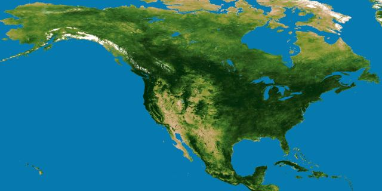
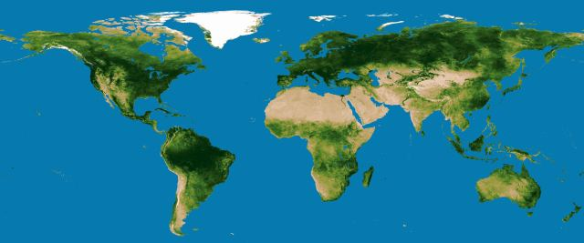
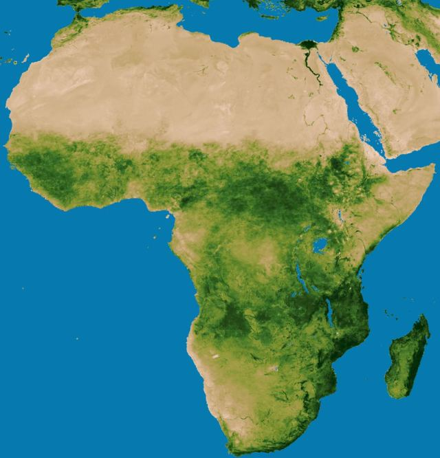
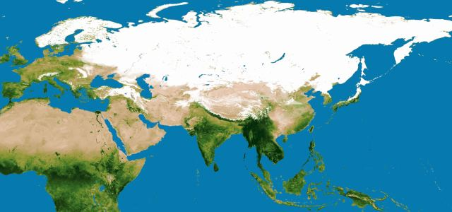
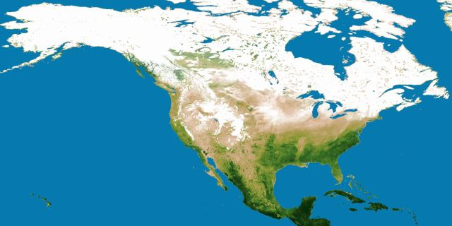

🧩 Макети інтерфейсу (заглушки)
Це не робочі екрани, лише варіанти вигляду. У кожного є код. Оберіть по одному в кожному розділі (можна комбінувати або написати «як L1, але…») і надішліть, наприклад: L1 + C1 + S2 + питання T2, T3 + відповідь A2.
1. Загальна схема: як поєднати джукбокс і гру
Ідея: одна сторінка, той самий плеєр і звук. Гра — це режим поверх плеєра, а не окрема сторінка. Технічних рядків (t=6.1s, air_winter 0%) немає взагалі або вони сховані в «Деталі».
L1Плеєр + перемикач режимів «Слухати / Грати»
Звична сторінка: зверху континенти, далі відео й одна кнопка. Під відео два режими. У «Слухати» видно, що звучить; у «Грати» з'являються нейрони-періоди й питання.

Квітень 2024: сніг тане, з'являються перші колокольчики.
+ найпростіше, працює на телефоні, легко пояснити журі. − гра менш «магічна».
L2«Сузір'я»: зоряне небо як у прототипі, плеєр у вікні зверху
Атмосфера прототипу «Ліси й нейрони». Відео — вікно зверху (розмите, поки відрізок не відкрито). Нейрони-квартали внизу на небі. Режим «Слухати» = вільний політ: усі зв'язки вже відкриті.
+ найкрасивіше, відразу «гра», ваш прототип стає основою. − складніше зробити, на телефоні тісно.
L3Карта світу як головне меню → сторінка континенту з бічною панеллю
Перший екран — карта, на якій континенти підсвічуються. Клік відкриває сторінку континенту: відео ліворуч, праворуч панель «Слухати / Грати».


🎐 Колокольчики: 6 на такт
🍂 Суха пора: сухий вітер
🐦 Птахи співають
+ красивий вхід, карта сама пояснює вибір регіону. − на один клік більше, бічна панель не влазить на телефон.
2. Керування: ОДНА кнопка замість трьох
Зараз є «Грати зі звуком», «Стоп» і ⏯. Залишаємо одну кнопку ▶/⏸ (і пробіл на клавіатурі). Різниця між варіантами лише в шкалі часу.
C1Кнопка + шкала з кольоровими порами року + дата
Видно, де зима (синє), весна, літо, осінь. Можна перемотати на потрібний сезон.
C2Кнопка прямо на відео + проста шкала + швидкість

Як YouTube, знайомо всім. Швидкість: 0.25× (2 хв), 0.5×, 1× (30 с).
C3Мінімалізм: велика дата над відео, тонка «стрічка років»
Акцент на даті: чути й видно, «де ми в році». Найчистіше.
3. «Що зараз звучить» без технічних цифр
S1Картки звуків, що світяться, коли звучать
зелені мало
сніг тане
Шари: вимкнути окремі звуки ▸
☑ Вітер ☑ Колокольчики ☑ Птахи ☑ Капель ☑ Дерево ☑ Голос ☑ Фон
Клік на картку вмикає або вимикає звук (заміна вимикачам).
S2Одне речення-субтитр під відео

Найзрозуміліше для незрячих (скрінрідер читає це речення), нічого зайвого.
S3Рівні звуків (смужки) + технічні цифри сховані в «Деталі»
Деталі для журі ▸
сніг 46% · гола земля 31% · зелень 23% · NDVI 0.29 · зелень росте (0.74)
Видно силу кожного звуку, а дані є для тих, кому цікаво.
4. Гра: шаблонні питання (однакові для кожного континенту)
Цикл: слухаєш відрізок (відео розмите) → відповідаєш → два нейрони-періоди з'єднуються, відео відкривається й грає з тим самим звуком → наступний відрізок. Відповідь рахується з даних, тож питання чесні для будь-якого континенту. Позначте, які шаблони беремо.
5. Гра: як відповідати
A1Великі кнопки з іконками під питанням
Просто, зручно з клавіатури (1/2) і на телефоні. Підходить для T1–T4, T6.
A2Клік на нейрон (як у прототипі)
Найбільш «ігрове», прямо з'єднує нейрони. Підходить для T5, T7.
A3Протягнути зв'язок від нейрона до відповіді
Найефектніше, але гірше з клавіатури та скрінрідером (потрібна альтернатива).
A4Повзунок-оцінка «скільки зелені»
Бали за близькість до правди. Складніше, для «експертного» рівня.
Мої рекомендації
L1 + C1 + S2 (з картками S1 як вимикачами), питання T2, T3, T4, T6, відповіді A1, плюс A2 для T5. Нейрони й зв'язки з прототипу живуть у режимі «Грати» як стрічка періодів. Так одна сторінка лишається простою, працює на телефоні й зі скрінрідером, а гра вбудована, а не окрема.
Ще ідея: «Режим із заплющеними очима» — відео повністю приховане, гра лише на слух. Це прямо про доступність, головну тему челенджу.